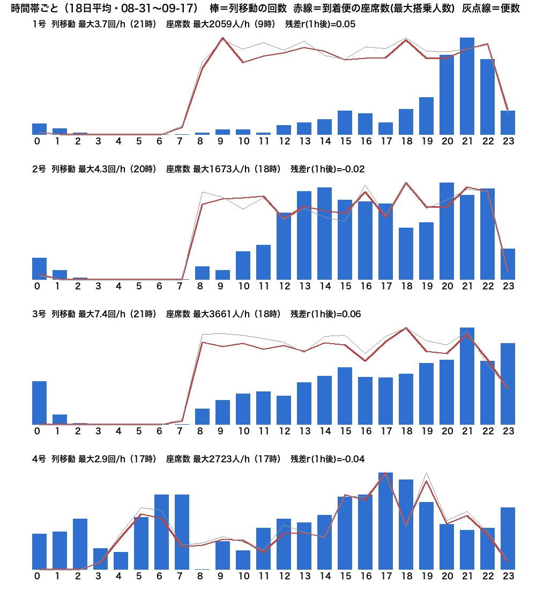
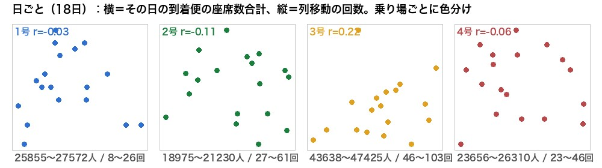

到着便（便数・最大搭乗人数）と列移動の関係 — 過去分を数え直して再検証（2026-09-18）
画像アーカイブ（外付け）から 8/21〜9/17 の列移動を新方式で数え直し（4号＝前縁追跡、1〜3号＝塊が動いた）。到着便の記録が生きている 8/31〜9/17 の 18日 で照合。到着便＝羽田公式の実着時刻・機材の座席数（＝最大搭乗人数）・出口の号。
① 時間帯ごと（1〜4号）

- 1〜3号：飛行機は朝8時から夜まで平ら、列移動は夜（20〜21時）に山。形が違う。
- 4号：早朝5〜7時と夕方17時の山が飛行機と重なる（4号は深夜も動く乗り場で、早朝の国際線と対応）。形は似ているが、日ごとの上下は連動しない（下の②）。
② 「その時間にいつもより飛行機が多いと、列移動も多いか」
時間帯の型（昼夜の形）を取り除いて比べた相関。1に近いほど連動、0は無関係、0.3以上で意味あり。
| ずらし | 1号 | 2号 | 3号 | 4号 |
|---|---|---|---|---|
| 同じ時間 | 0.08 | 0.13 | 0.08 | -0.03 |
| 1時間後 | 0.05 | -0.02 | 0.06 | -0.04 |
| 2時間後 | -0.04 | -0.01 | 0.05 | 0.05 |
| 3時間後 | -0.09 | -0.05 | 0.02 | -0.06 |
| 4時間後 | -0.06 | 0.08 | 0.09 | 0.10 |
座席数で見た値。便数で見ても同じ（すべて ±0.13 以内）。n＝18日×24時間。
結論：どの乗り場も、どのずらしでも、つながりは無い（r ≦ 0.13）。
③ 日ごと（18日）

横＝その日の到着便の座席数合計、縦＝列移動の回数。1号 −0.03／2号 −0.11／3号 0.22／4号 −0.06。飛行機は毎日ほぼ同じ量（差3〜5%）なのに、列移動は 1.5〜2倍ぶれる。
④ 受け止め
- 8/27（旧い数え方・5日）、9/18 昼（新しい数え方・5日）、今回（新しい数え方・18日）— 3回とも同じ結論。
- 飛行機の量は「プールに車が溜まる速さ」ではなく「客が出てくる量」で、列移動（車が出ていく速さ）は客がタクシーを選ぶ割合・時間帯・曜日で決まる。到着便から列移動は読めない。
- 到着便の情報は「これから客が来る量の目安」として表示は残す。列移動の予測には、時間帯・曜日のリズムと現況を使う（今の作り）。
⑤ 過去分の数え直し（参考）
| 号 | 8/21〜9/17 合計（新） | 同（旧・箱） | 1日あたり（新） |
|---|---|---|---|
| 1号 | 480 | 304 | 17 |
| 2号 | 1,277 | 519 | 46 |
| 3号 | 1,929 | 1,093 | 69 |
| 4号 | 1,010（列ぶん） | 525 | 36 |
アプリの履歴（advance-count-history）も同期間を置き換え済み。8/27監査の旧カメラ期（37/46/51/63）と 2号は一致、3号・4号は上回り、1号は取りこぼしが残る。